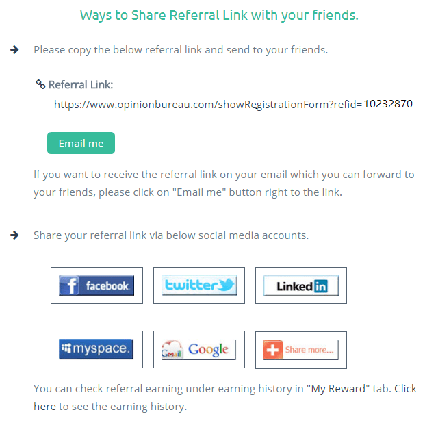
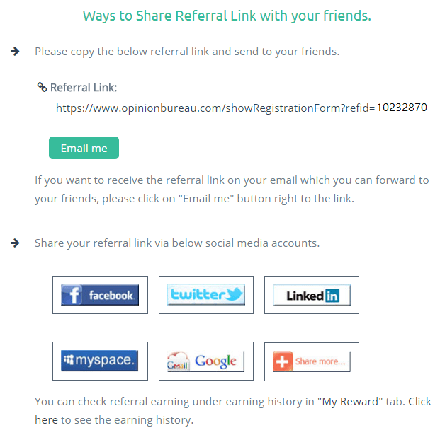

Sondaggi a pagamento


Clicca sulle immagini per ulteriori informazioni.
Di seguito, spieghiamo quelli che a nostro avviso sono i più significativi dei 16 punti indicati nei termini e nelle condizioni del Opinion Bureau, ti chiediamo di leggerli con particolare attenzione in modo da evitare inconvenienti che potrebbero influenzare il vostro progresso questo web.


Opinion Bureau si riserva il diritto di prendere in considerazione la propria idoneità a partecipare a ciascuna delle tue sondaggi:
Ciò indica che il Opinion Bureau consente il diritto di decidere se siamo in grado di rispondere a ciascuna delle sondaggi, in base al nostro profilo e alle risposte fornite in diverse sondaggi.In qualsiasi fase, se scoprirai di aver creato più account con Opinion Bureau utilizzando diversi indirizzi e-mail, tutti i tuoi account saranno bloccati e l'importo vincolato su ciascuno degli account:
Questo punto è molto importante, perché se l'opinione pubblica rileva che hai creato più di un account con lo stesso indirizzo IP, tutto sarà bloccato e lo stesso accadrà con i profitti che hai ottenuto in essi.I partecipanti sono invitati a non dare risposte sbagliate o falsificate in un sondaggio. Tutte le risposte devono essere veritiere e oneste:
È importante rispondere in base alle informazioni che abbiamo registrato nel nostro profilo, è solito che nelle sondaggi alcune domande appaiano due o più volte, per verificare se rispondiamo ogni domanda allo stesso modo, se rispondiamo alla stessa domanda in un modo diversa, la tua partecipazione all'indagine finirà e non riceverai la ricompensa per aver risposto.Non proverai più a fare un'indagine più volte. Se scopriremo di partecipare alla stessa indagine in più occasioni, la tua iscrizione sarà interrotta dalla nostra squadra:
Non tentare mai di rispondere più volte ad un sondaggio, ad esempio aprendolo nel tuo browser in più schede, può essere visto come un modo più veloce per aumentare i tuoi guadagni, ma ciò che accadrà è esattamente il contrario, la tua iscrizione sarà annullata, vale a dire il tuo account saranno eliminati ei tuoi profitti uguali.Non utilizzerai mai alcuna tecnica automatica per la creazione dell'account o per rispondere alle domande di indagine come i robot o qualsiasi altro software o per provocare l'invio di virus attraverso il sito:
Simile al punto 8, con la differenza che non copre il tentativo di rispondere più volte ad un sondaggio, ma per farlo con i robot oltre a provare a inviare virus attraverso il web, tutto ciò comporta l'eliminazione del tuo account e dei tuoi profitti.Se avete dei dubbi sulle condizioni di utilizzo dell'Istituto di opinione, ricordatevi di poter visitare la sezione
e faremo del nostro meglio per chiarire tutti i dubbi che avete su questo e su tutte le pagine di questo sito.
Per accedere alle sondaggi ci sono due modi, la prima è con una notifica che raggiunge l'e-mail registrata nel tuo profilo, in quella posta elettronica, avrai un link che ti porterà all'indagine e il secondo modulo è dalla pagina Opinion Bureau, in cima, come vedete nella sequenza seguente:

Quando entri, troverai le sondaggi disponibili per rispondere, nel nostro caso, la prima volta che abbiamo inserito, abbiamo apparso:

Completa il tuo profilo
, ti consigliamo di essere le prime cose che fai dopo la registrazione con il Opinion Bureau, questo ti renderà più facile per voi ottenere i più sondaggi che ti vengono, per completare le tue informazioni sul tuo profilo, fai clic sull'opzione

Ci sono cinque categorie che dovreste completare il più possibile per aumentare la probabilità di rispondere alle sondaggi che vengono a voi, vale la pena notare che potresti non essere in grado di completare tutte le categorie al 100%, poiché essere in grado di rispondere a determinate domande dipende le risposte che hai dato a una o più domande precedenti.

Sii paziente se non riesci a rispondere ad alcune sondaggi
, ti rendi conto che non sei in grado di rispondere a tutte le sondaggi, non vogliamo mentire di dirti che puoi rispondere a tutti, perché sappiamo che non è vero, non tutti i profili sono idonei a rispondere ad un sondaggio, sì, ti consigliamo di entrare tutto ciò che ti sembra, così come alcuni non sarai in grado di risponderli, in altri sarai in grado e sì sarai in grado di farlo.
Fornisce informazioni coerenti
, cercando di ricordare le informazioni fornite poiché in un'indagine puoi ottenere due o più volte la stessa domanda, per verificare se la risposta a questa domanda è sempre la stessa, altrimenti non sarai in grado di rispondere all'indagine e non riceverai il rispettivo pagamento.
Osservare le notifiche via email
, in caso contrario, ti consigliamo di esaminare costantemente le sondaggi condotte sul sito Internet della Opinione, dal momento che le sondaggi scompaiono quando il numero richiesto degli intervistati è raggiunto, quindi non esiste un tempo fisso durante il quale l'indagine verrà effettuata disponibili.

Per visualizzare il tuo saldo in Opinion Bureau devi, una volta entrati, clicca sull'immagine del profilo o sul segno di opzione a destra, quindi seleziona l'opzione

Come potete vedere, sul lato destro vedrai l'importo che hai accumulato finora, dobbiamo chiarire che questa cattura è stata presa al momento della registrazione, per questo abbiamo solo i primi 6 USD di cui abbiamo già parlato.
Tornando agli aspetti importanti del pagamento, l'importo minimo per richiedere il ritiro è di 10 USD o equivalente in diverse valute.
Se hai già vinto i 10 USD e vuoi ritirare le tue vincite, devi accettare l'opzione

Ti troverai con questo modulo in cui ti racconta i guadagni che hai accumulato e la quantità che hai a disposizione per ritirare. Dobbiamo chiarire che non tutto ciò che si ottiene è reso estraibile, ad esempio quello che guadagni con un sondaggio è revocabile 45 giorni dopo aver risposto all'indagine.

Una volta che hai almeno 10 USD nell'importo revocabile, per iniziare il processo di ritiro, clicca sul pulsante
Giorni dopo, riceverai un'e-mail per confermare di aver richiesto il ritiro, devi selezionare nuovamente il metodo di pagamento, se hai scelto PayPal, ti verrà chiesto di inserire i tuoi dati dal tuo conto PayPal.
Una volta completato l'inserimento dei dati dell'account PayPal e confermarli, hai già completato il processo di recesso, devi solo aspettare da 2 a 4 giorni, mentre la transazione è completa.
In Opinion Bureau è anche possibile aumentare i profitti attraverso il sistema di referral, che è possibile accedere dal menu principale, nell'opzione

 

Il sistema di referral è molto semplice, affinché ognuno dei tuoi amici registri sulla piattaforma e risponda all'indagine iniziale, per la quale il tuo amico guadagnerà 6 USD, riceverai 1 USD, indipendentemente dal fatto che il tuo amico risponda ancora alle sondaggi o meno , riceverai quel dollaro iniziale.
Se il mio paese non è disponibile, posso utilizzare VPN?
Non lo consiglio perché le applicazioni che forniscono la connessione IP di diversi paesi possono assegnare lo stesso indirizzo IP al tuo account e agli altri utenti che, se rilevati da Opinion Bureau, potrebbero causare l'eliminazione del tuo account e si perderebbe i profitti che hai fatto, ma ricorda che se si desidera utilizzare un servizio VPN è la tua responsabilità e rischi di essere punito.
Quante volte posso fare un ritiro?
Ogni volta che lo desideri, a patto che tu abbia almeno 10 USD per ritirare, ricorda che tra il momento in cui richiedi il ritiro e che i tuoi soldi raggiungono PayPal o qualsiasi altro metodo di pagamento, può richiedere da 5 a 20 giorni, in cui è possibile richiedere un ritiro.
Il pagamento è solo in USD?
La valuta con cui il pagamento viene effettuato dipende dal tuo paese, ad esempio se sei proveniente dalla Spagna, il pagamento sarà in euro, ma se sei proveniente dagli Stati Uniti, sarà in USD.
Quanto tempo ci vuole per ritirare le vincite?
Tra di voi richiede il ritiro e che ricevi l'email di conferma, può richiedere da 1 a 15 giorni e una volta che confermerai i tuoi dati PayPal, potrebbe richiedere da 2 a 4 giorni perché i soldi compariscano anche sul tuo account PayPal che in totale il tempo tra cui richiedere il ritiro e che si ottiene il denaro può variare tra 1 e 20 giorni.
Quanti sondaggi al giorno?
Dalla nostra esperienza, possiamo dirvi che alcuni giorni arrivano da 1 a 3 sondaggi al giorno, anche se talvolta nessuno di loro arriva tutto il giorno, quindi ti consigliamo di accedere frequentemente per accedere a più sondaggi possibili.
Non ho conto PayPal
Nessun problema, la prima cosa che devi fare è andare alla pagina PayPal, non forniamo il collegamento per la tua sicurezza, una volta lì, in alto troverai le seguenti opzioni:

Qui, dopo aver fatto clic su

Più tardi ti verrà chiesto il tuo genere e i tuoi gusti e poi i tuoi dati personali e alla fine ti chiederanno se vuoi associare la tua carta bancaria, potendo rinviare se vuoi farlo facendo clic su